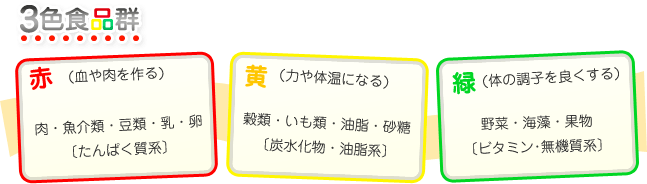

～今日の夕飯何にしようかなー
僕は、家庭科の教師になったのと同時に、父子家庭を経験することになった。この時、息子は食べ盛りの高校生。最初に思ったことは、食事作りだけは欠かすまい、という決意だった。「家庭科の教師」というプライドに懸けて、子どもを飢えさせたり、栄養不足だったり、栄養過多だったり、そんなことをさせる訳には絶対いかなかった。コンビニ弁当で済ませたり、外食に頼ったりは極力避けることを心がけた。
仕事が終わって帰宅途中、車を運転しながら今日の夕飯は何にしようかなー？ と考える。まず、頭に思い浮かべるのが、昨日は何を食べたか、冷蔵庫の中には何が残っているか、そして今日は何を食べたいか。３０分も車を走らせると、近所のスーパーに着く。その頃には、だいたいの献立がイメージできている。
昨日、中華だったら、今日は和食か洋食。昨日、肉だったら、今日は魚。要は、単調にならないこと、献立にもバランスを考える。そして、残っている食材をどう料理してくれようかと、あれこれ楽しむ。そこでは想像力と創造力が必要だ。献立を考えている時は脳みそがフル回転する。ボケ防止にはもってこい。そろそろ年齢かなー？ とお思いの方は、せっせと料理にいそしむのがいい、それが一番の予防法。
献立が決まったら、何が足りないかを頭の中でチェックしてスーパーに入る。ただ、困るのは、夕方遅めの買い物は誘惑が多い。ちょうどその頃、３０％引きとか、半額とかのシールが貼られたりした商品が出回るのだ。それは僕の心をくすぐり、ついつい買い物かごに入れてしまう。それと、もう一つの落とし穴。食事前の買い物はお腹が空いている。食材のどれもこれもが美味しく見えて、つい、余計なものを買ってしまう。あれこれ考えた献立が吹っ飛んで、メニュー変更ということにもなりかねない。しかし、料理は臨機応変、軟らかな頭も時には肝要で、それを楽しむゆとりは欲しいもの。ともあれ、空腹時の買い物は要注意！
献立の立て方
献立の基本は、「一汁三菜」または「一汁二菜」、と考えると立てやすい。
|
和食 sansai写真：一汁三菜 一汁三菜 （主食、主菜、副菜、副々菜、汁物の5品） この他に、デザートや飲み物が適宜加わる。 |
nisai写真：一汁二菜 一汁二菜 （主食、主菜、副菜、汁物の品） |
|
洋食：家庭では和食の配膳に準ずる。汁物がスープになり、ここに牛乳やジュース、フルーツが添えられたりする。 westarn写真：洋食 |
中華：正式には大皿から各自小皿に取り分ける形だが、家庭では和食の配膳に準ずる。点心やデザート、麺類が入って来たりする。 china写真：中華 |
まず、主食と主菜が柱になる。そこに副菜と汁物を添えるイメージで。主食は炭水化物系で、ご飯類、麺類、パスタ類、パン類となる。主菜はたんぱく質系で、肉、魚、卵、豆腐類の料理が該当する。カレーや丼物、中華メンやパスタ類は、主食と主菜が一緒になったものと考える。副菜や副々菜はビタミン類や無機質類と考えて、野菜、海藻、芋、豆類、果物を中心に。副菜はボリューム感あるものを、副々菜は常備菜や漬物、和え物などちょっとしたものという感じ、ありもの、残り物を活用する。汁物は、味噌汁、お吸い物、洋風スープ、中華スープなどで、主菜や副菜を作るついでに同時進行で、残り野菜などを活用して調理する。
献立全体で、彩がきれいだと、楽しいし食欲もそそられる。それを意識して食材を購入する。人参、カラーピーマン、パプリカ、トマト、卵などは彩を添えるいいアイテムだ。
献立を立てる上で最も大切なことは、栄養のバランスだ。一応の数量的な※1目標値はあるが、それを毎日の家庭料理に適用するのは難しい。そこで、簡単に、感覚的にイメージできるものとして※2『３色食品群』というのがある。これは食品を、色のイメージで「赤」「黄」「緑」にグループ分けしたもので、毎食の献立に、赤・黄・緑の三色の食品を取り入れることで、自然に栄養のバランスがとれてくるというもの。これに対して、もう少し量的に捉えやすいものとして※3『４つの食品群』という考え方がある。これは、食品を１群～４群に分け、数値目標を持たせたものである。
※１,※２,※３ともに詳しくは「食の基礎講座」を参照
以前、厚生労働省の食生活指針に、「一日３０品目以上の食品」というのがあった。この数字に囚われることはないが、多くの食品を摂ることにより、偏りなく栄養が摂れることを意味している。

旬のものを取り入れて、季節感を出すことも、ちょっとした心づかい。気持ちに潤いが持てるというものだ。調理法は、重複しないよう、焼く、煮る、揚げる、蒸す、炒める、和えるなど、バラエティーに富むように気を配る。食を楽しむ少しのゆとりは食を豊かにする。
- 献立のポイント
- 栄養のバランス
- 調理法が重ならない
- 旬のもの
- 彩りよく
- 多い品目
息子と自分のために毎日料理を始めた頃、最初はやはり頑張った。いや、頑張らざるを得なかった。料理本も購入し、いつも新しい料理に挑戦！ という感じだった。本に載っている写真はいつも美味しそうに見える。その出来上がりをイメージして、料理に取り掛かる。すると、どうしてもレシピ通りにやろうとしてしまう。慣れてない分、段取りは悪く、途中の手抜きやアバウトさという抜け道は選択できない。結果、時間ばかりが掛かってしまう。そして、料理が出来る頃にはヘトヘトになって、食欲さえ失われている、なーんてことにも成りかねない。おまけに、息子から「夕飯まだー？ 腹減ったんだけど！」などと、苦情めいたことを言われた日にゃー、「ふざけるなー、誰の為にやってると思うんだー」と、キレそうになる。それでも、美味しく出来た時はまだいい。失敗して、見るも無残な料理になることだってある。そんな時は、ホント、泣きたい気分になる。
「何で、人間は食わなきゃならないんだ！ 食わずに済むんだったらどんだけ楽か！」と、馬鹿なことも口走る。
だから、頑張りはほどほどに。調理時間も考慮して、疲れている時や時間がない時は、簡単手抜き料理で済ます賢さ（ズルサ？）も必要だ。本当に、どうしても、気持ちも体もやりたくない時は、外食でもいい、コンビニ弁当でもいい。一品だけ作って、あとはお惣菜を買ってくるのでもいい。インスタント食品だって、たまにはいい。要するに、無理は禁物だということだ。しかし、ここには葛藤がある。安易さへの誘惑との闘いがある。勝利への援軍は、やっぱり自分で作ったものは旨い！ということだ。それともう一つ、食べさせる誰かがいると、義務が生じるし、励みになる。これが一番の安き流れへの歯止めになる。